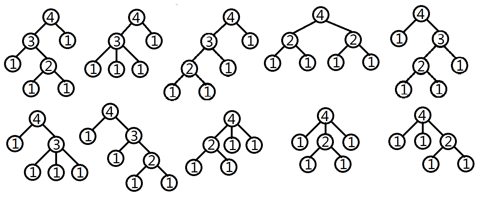

第一行有2个整数s,m。
第二行有m个互异的整数，d[1],d[2],…,d[m]，为集合D中的元素。
我们的大朋友很喜欢计算机科学，而且尤其喜欢多叉树。对于一棵带有正整数点权的有根多叉树，如果它满足这样的性质，我们的大朋友就会将其称作神犇的：点权为1的结点是叶子结点；对于任一点权大于1的结点u，u的孩子数目deg[u]属于集合D，且u的点权等于这些孩子结点的点权之和。
给出一个整数s，你能求出根节点权值为s的神犇多叉树的个数吗？请参照样例以更好的理解什么样的两棵多叉树会被视为不同的。
我们只需要知道答案关于950009857（453*2^21+1，一个质数）取模后的值。
第一行有2个整数s,m。
第二行有m个互异的整数，d[1],d[2],…,d[m]，为集合D中的元素。
输出一行仅一个整数，表示答案模950009857的值。
4 2
2 3
10

数据规模：
1<=m<s<=10^5, 2<=d[i]<=s，有3组小数据和3组大数据。